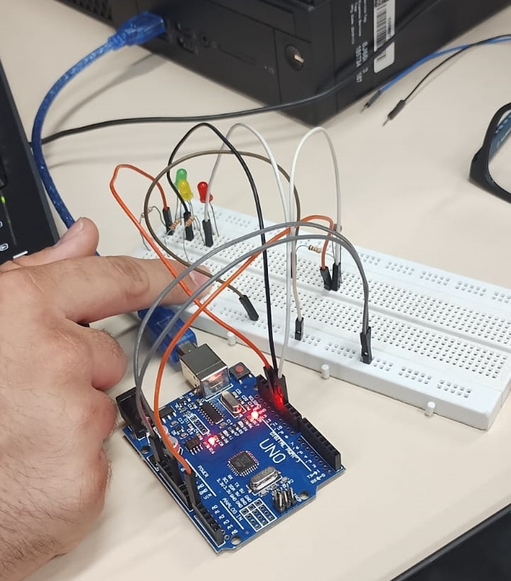

Foto do LDR com a montagem física no ARDUINO

Print de tela de um exemplo de código C++ no IDE ARDUINO

Filmagem do controle de iluminação
Medidas realizadas com o multímetro e explicação
As medidas captadas pelo multímetro sofrem alterações constantes devido a oscilação da luz no ambiente em que foi capturado.
circuito no TinkerCad